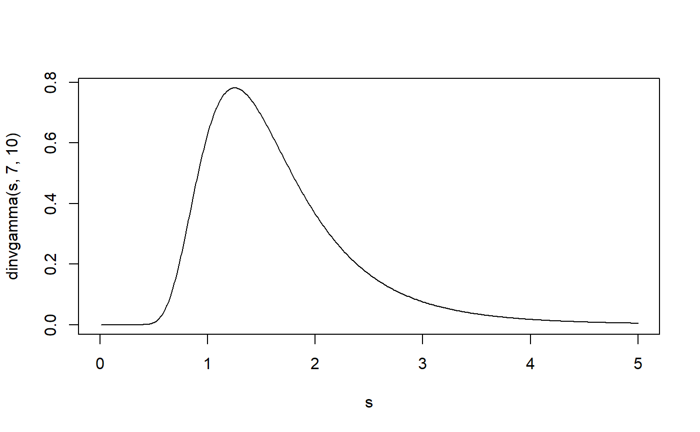

Density, distribution function, quantile function and random generation for the inverse gamma distribution.
dinvgamma(x, shape, rate = 1, scale = 1/rate, log = FALSE) pinvgamma(q, shape, rate = 1, scale = 1/rate, lower.tail = TRUE, log.p = FALSE) qinvgamma(p, shape, rate = 1, scale = 1/rate, lower.tail = TRUE, log.p = FALSE) rinvgamma(n, shape, rate = 1, scale = 1/rate)
| x, q | vector of quantiles. |
|---|---|
| shape | inverse gamma shape parameter |
| rate | inverse gamma rate parameter |
| scale | alternative to rate; scale = 1/rate |
| log, log.p | logical; if TRUE, probabilities p are given as log(p). |
| lower.tail | logical; if TRUE (default), probabilities are P(X <= x) otherwise, P(X > x). |
| p | vector of probabilities. |
| n | number of observations. If length(n) > 1, the length is taken to be the number required. |
The inverse gamma distribution with parameters shape and rate has density f(x) = rate^shape/Gamma(shape) x^(-1-shape) e^(-rate/x) it is the inverse of the standard gamma parameterzation in R.
The functions (d/p/q/r)invgamma simply wrap those of the standard
(d/p/q/r)gamma R implementation, so look at, say,
dgamma for details.
s <- seq(0, 5, .01) plot(s, dinvgamma(s, 7, 10), type = 'l')f <- function(x) dinvgamma(x, 7, 10) q <- 2 integrate(f, 0, q)#> 0.7621835 with absolute error < 7.3e-05(p <- pinvgamma(q, 7, 10))#> [1] 0.7621835qinvgamma(p, 7, 10) # = q#> [1] 2mean(rinvgamma(1e5, 7, 10) <= q)#> [1] 0.76176